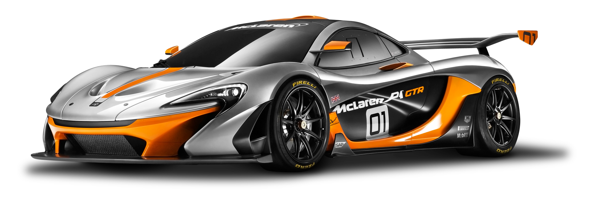

Without road-car regulations
to hold it back,
the McLaren P1™ GTR is
the ultimate driving machine.
MCLAREN
MCLAREN
P1™ GTR
P1™ GTR
HEADQUARTERS
Klipsch |
Welcome to the speed of sound. The T5 True Wireless II Sport McLaren edition earphones provide incredible comfort, clarity, and freedom to enjoy your music all day with no wires.
Klipsch® Certified Factory Refurbished audio products have been tested, inspected, and approved for sale by a Klipsch quality assurance professional. All Klipsch® Certified Factory Refurbished audio products pass the same strict performance standards as our brand-new products and carry little or no blemishes or imperfections.
All Klipsch® Certified Factory-Refurbished products come backed with our standard Limited Warranty and Free 90-Day Return Guarantee.
Features:
- Klipsch® Certified Factory-Refurbished
- Klipsch Limited Warranty + Free 90-Day Return Guarantee
- Part of the Klipsch McLaren Racing F1 Team Official Audio Partnership
- Legendary, detailed, dynamic Klipsch sound
- Dust/waterproof case with moisture removal
- Patented, ultra-comfortable ear tips
- Signal-boosting antenna
- Fast USB-C charging with wireless charging pad included